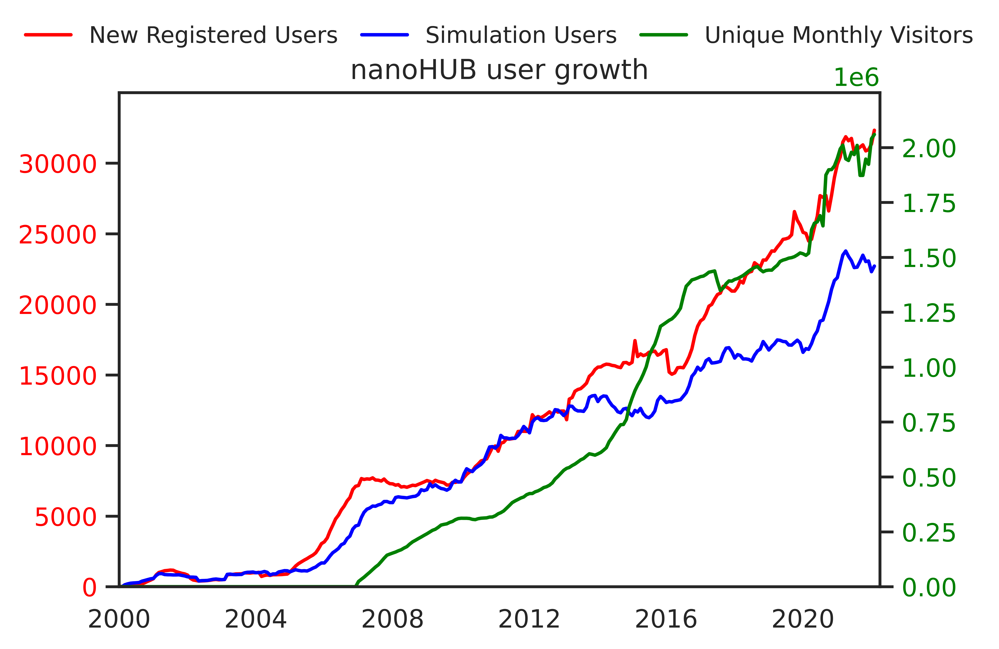

NanoHUB Annual Report Data

About
This webpage shows the latest information about nanoHUB's evolution in a variety of different areas.
These different areas primarily include data on NanoHUB's users (physical location, usage pattern, simulation runs),
information about the types of universities using nanoHUB, citations using nanoHUB resources, simulation use
in structured classroom instruction, and content generation and cumulative growth.
Who are nanoHUB's Users?
The following section describes nanoHUB's users in a variety of contexts including common locations from which nanoHUB is used,
usage patterns (whether nanoHUB is used for coordinated education, research or self-study), simulation run patterns,
longevity and liftime on nanoHUB, and the different forms of registration (whether the user is a new user, an active
simulation user, or a visitor.

NanoHUB's Utilization in University Classrooms
The following section describes nanoHUB user activity in context of institutions. Basic data like institution names,
locations, addresses, states, and unique web addresses are taken into account. Additionally, people's email addresses,
geolocation, class clusters, and citations are used to better understand affiliations with institutions.
Instituions follow the basic Carnegie Classification system with R1 institutions and MSI/HCBU institutions.


NanoHUB's Utilization Among Researchers
The following section describes how nanoHUB gets cited in research papers by NCN and non-NCN affiliated researchers.
Generally, citation information pertaining to the type of document, the industry using nanoHUB
(i.e. education, government, military), citations by continent, and nature of citation (i.e. cyberinfastructure, education,
research, research and education) are collected.
NanoHUB's Utilization In Structured Classroom Instruction
The following section describes different user patterns among university classes. People belonging to a University class are
grouped into different classes and clusters, and using this different information we can track the number of different University
classes that have used nanoHUB's services over time. Additionally, we can also track the specific number of students who use nanoHUB
for one course and compare that with the specific number of students who use nanoHUB for multiple courses.
NanoHUB's Content Generation and Cumulative Growth
The following section describes the source of the tools that allows nanoHUB to continue to grow and serve people worldwide.
Primary sources of the rich information nanoHUB houses mainly come from Purdue affiliated people, people outside of Purdue,
and people outside of Purdue who have collaboarated and/or have received assistance from Purdue affiliated people.